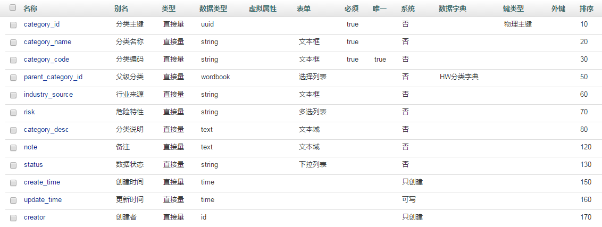
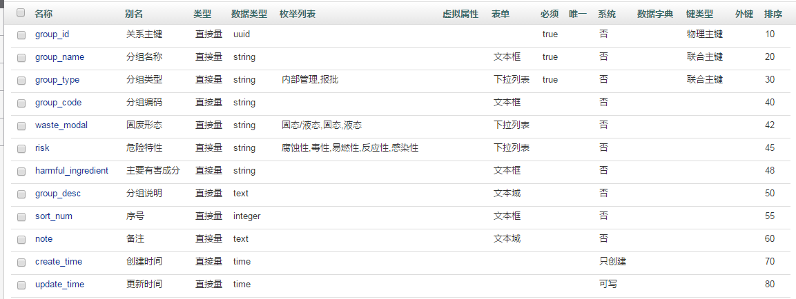
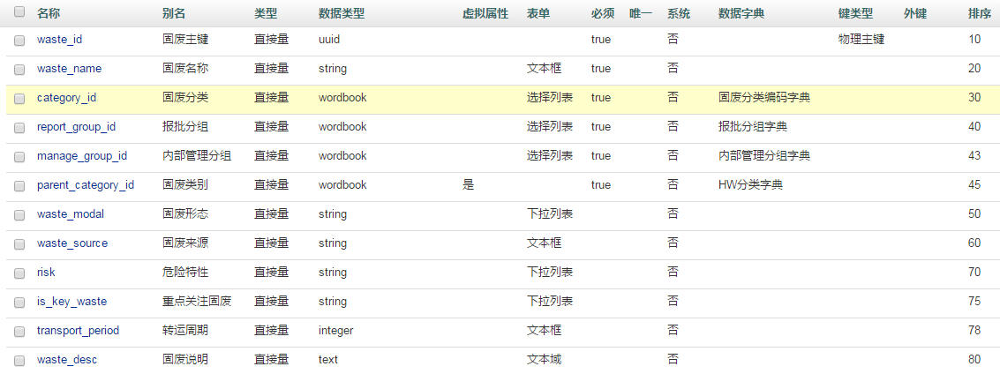
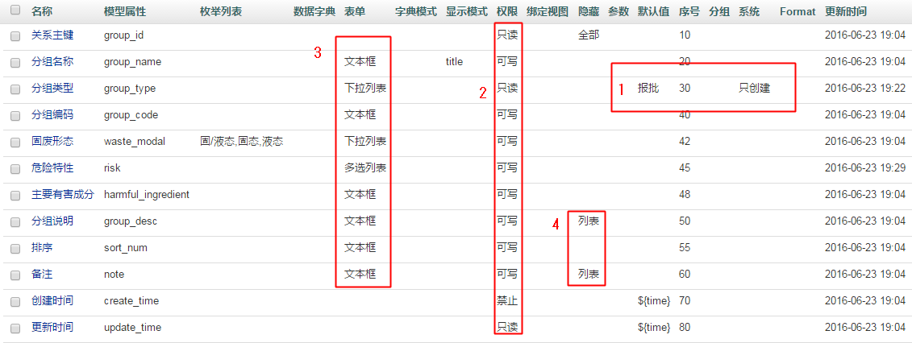

创建主题域为HWMS，创建数据源为hwms。
模型构建
按照上一节图2的属性我们进行模型的配置。可以知道，我们需要构建三个模型，分别为固废分类（hwms_category）,固废分组(hwms_group）和固废名称（hwms_name）。
各个模型的构建分别为

图1 固废分类模型示例

图2 固废分组模型示例

图3 固废名称模型示例
对以上各个模型关键点的说明
- 通用说明
- 每个模型都要有主键，类型为UUID
- 每个模型的“创建时间”“更新时间”“创建者”都是系统自己填写，填写方式为“只创建”，“只更新”，“只创建”，默认值分别为${time},${time},${uid}，这些变量都可以在开发者平台的“配置”->“系统变量”里查看
- wordbook类型的属性要指定对应的字典
- 固废分类模型
- parent_category_id对应的字典为HW分类字典
- 固废分组模型
- 在内部分组中设置了联合主键。联合主键主要用于业务唯一，物理主键用于逻辑唯一。
- 枚举类型可以以KV对形式呈现，如
，保存到数据库时是保存K值。也可以是“yes”：“是”，“no”：“否”，保存到数据库为V值。“是”：“否”- 固废名称模型
数据集构建
数据集的构建是在视图的构造中对应生成的，后面在视图字典的构造中予以讲解。数据集可重用。
字典构建
HW分类字典
HW分类字典返回所有的父级固废分类，其SQL原生查询为select * from `hwms_category` as t where t.parent_category_id is null or t.parent_category_id = ''设置其属性时，保留主键及相关信息，并将想要显示给读者的属性标注为title
报批分组字典、内部管理字典与HW分类字典类似，不同的是查询语句的不同，分别为
SELECT * FROM `hwms_waste_group` where group_type='报批' order by sort_numSELECT * FROM `hwms_waste_group`where group_type='内部管理' order by sort_num
- 固废分类编码字典
固废分类编码字典与上面的不同是他是一个树形字典，其SQL原生查询语句为
select * from hwms_category
在创建本字典时，应该设置为“树形”模式，并且其参数设置为
{"handle":"true","nodeName":"parent_category_id","pagination":"node","size":"15"}
其中，nodeName指定其树形的支点，pagination指定以节点方式呈现。至此，一个父子型字典选择列表生成成功。
视图的构建从三个基础的视图开始，即固废分类视图、报批分组视图和内部管理视图
视图构建
- 报批分组视图与内部管理分组视图

图4 固废名称模型示例
| 权限 | 说明 |
|---|---|
| 可写 | 在创建或者更新时都会出现表单元素 |
| 可更新 | 只在更新（修改）时才会出现 |
| 可创建 | 只在创建时才会出现 |
| 只读 | 只读属性，约定了此属性只能用于展示，不能在表单中出现 |
| 禁止 | 数据不会发送到前端，但是会用到 |
| 深度可写 | 一次性将所有视图和子视图信息全部反馈回来，不用调用两次接口 |
注意的是视图中的权限与视图中的系统的区别，系统是默认值的权限，如可创建则表示仅在创建的时候写入默认值，而视图中的权限表示这个字段的显示规范。
- 固废分类视图 因为固废分类也是父子级显示，所以其跟固废分类编码字典配置类似，不再赘述。
- 固废名称视图
固废名称视图的难点在于如何去构建虚拟属性，而且这个属性还是一个WORDBOOK类型。首先要从原理上去理解：当前实体不存在的属性为虚拟属性，可以通过计算或者连接拼接出来，平常情况下可以通过返回指定列名的属性值。现在的情况是这列是字典类型，因为字典是依靠主键来定位的，所以应该返回主键
理解了上面的话，那我们在构建固废名称视图的数据集时要将固废类别列返回的数据定位为主键。其SQL原生查询为
select t1.*, t2.parent_category_id from hwms_waste t1 LEFT JOIN hwms_category t2 on t1.category_id=t2.category_id order by t1.sort_num
由于没有额外的动作，不再赘述；过滤器会自动根据选择的视图属性生成对应的过滤器形式，如枚举会生成枚举类型的过滤器。